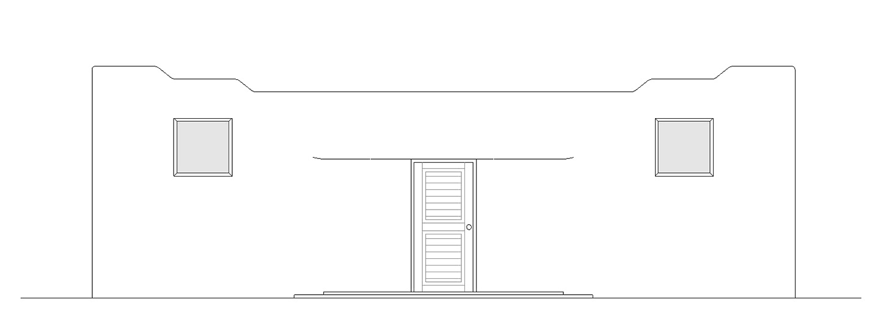

Adobe Home
Accessory Dwelling Unit

This home is inspired by adobe architecture and Spanish mission architecture. A central courtyard brings in light and allows you to be outside without leaving the house. Since the majority of light comes in through the courtyard, the windows on the outer edges are placed higher which gives a sense of protection and privacy. The simple design, warm colors, and use of wood, adobe, and tile help create a comfortable and natural environment.


Front Elevation
Section
Plan